Internacional
Clube atual
21 jogos · 0 gols
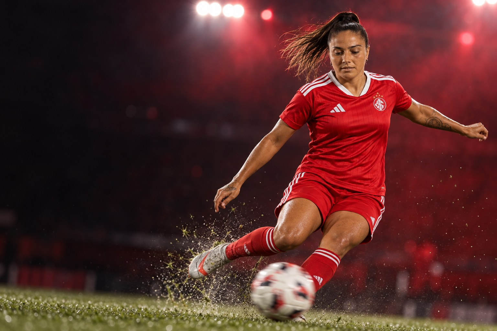
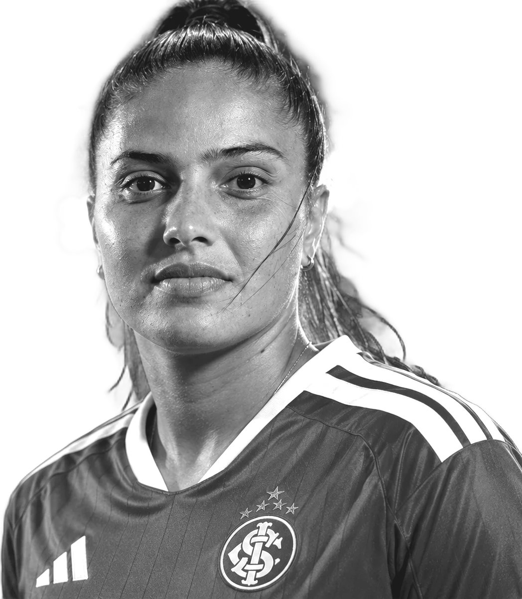
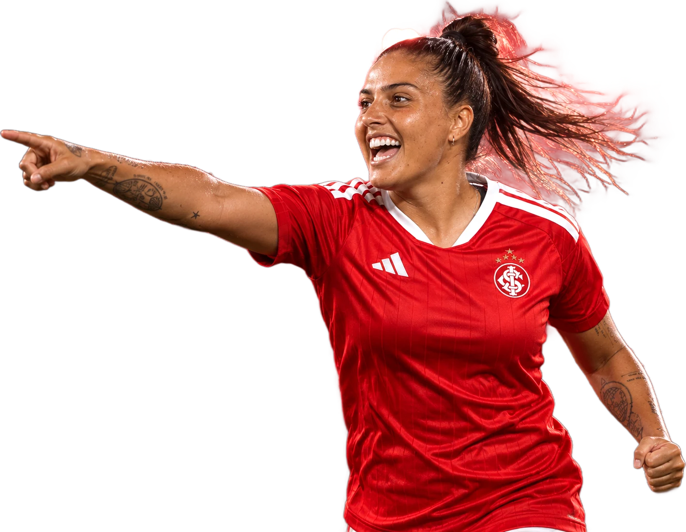
Futebolista profissional · Meia
Catyellen Geovanna Victor de Souza
“Esse gol foi meu e de toda a equipe.”
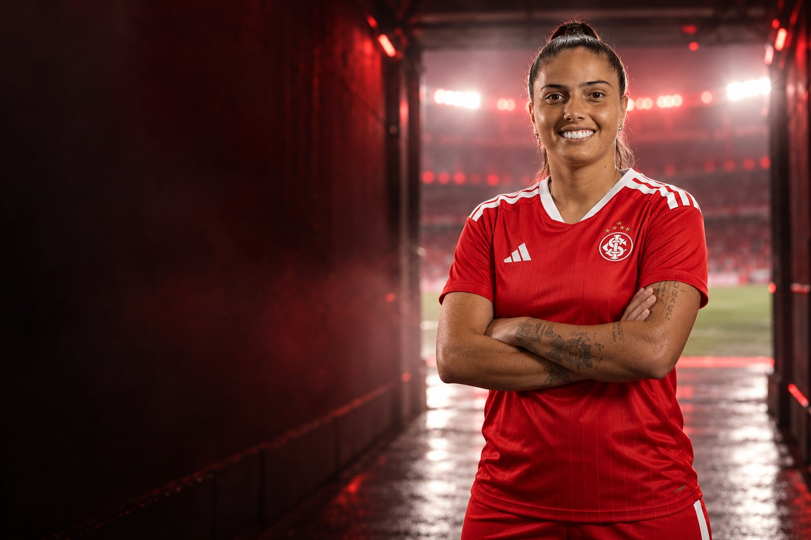
Sobre
Catyellen Geovanna Victor de Souza é futebolista profissional e atua como ponta esquerda e meia esquerda. Clube atual: Internacional.
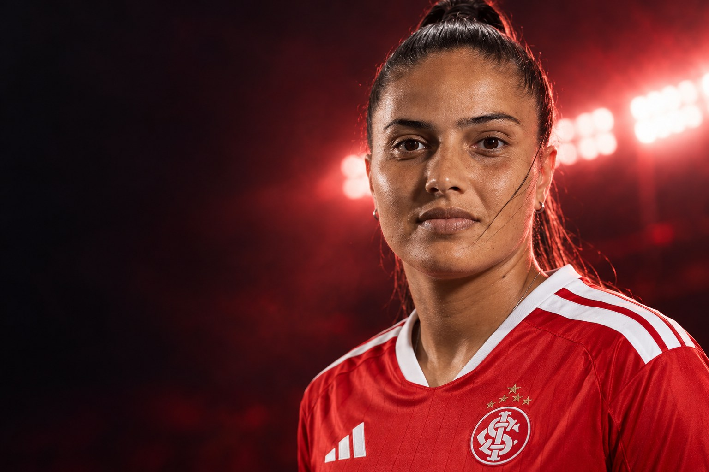
“Certamente eu não fui sozinha, esse gol foi meu e de toda a equipe, todos vieram comigo.”Caty, ao site do Avaí, após o gol que levou o Avaí/Kindermann à semifinal do Brasileiro Feminino de 2019
Perfil
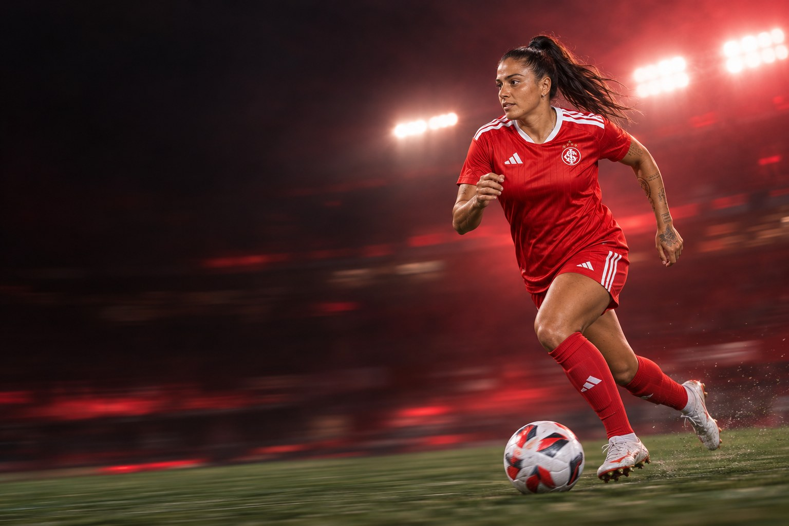
Carreira em números
Carreira
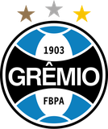
2022GrêmioClubes em destaque
21 jogos · 0 gols
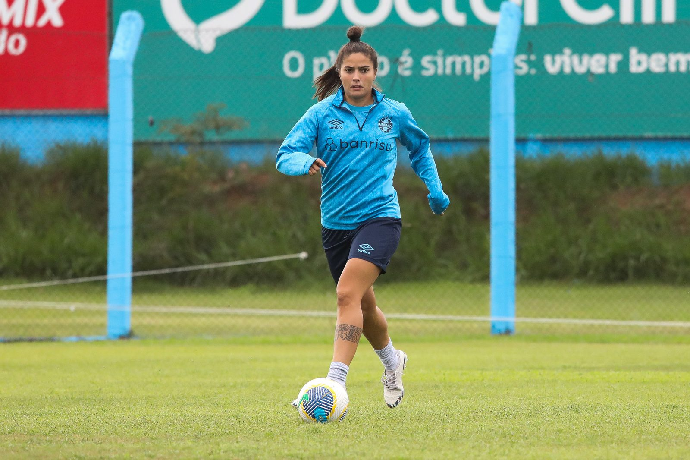
55 jogos · 7 gols
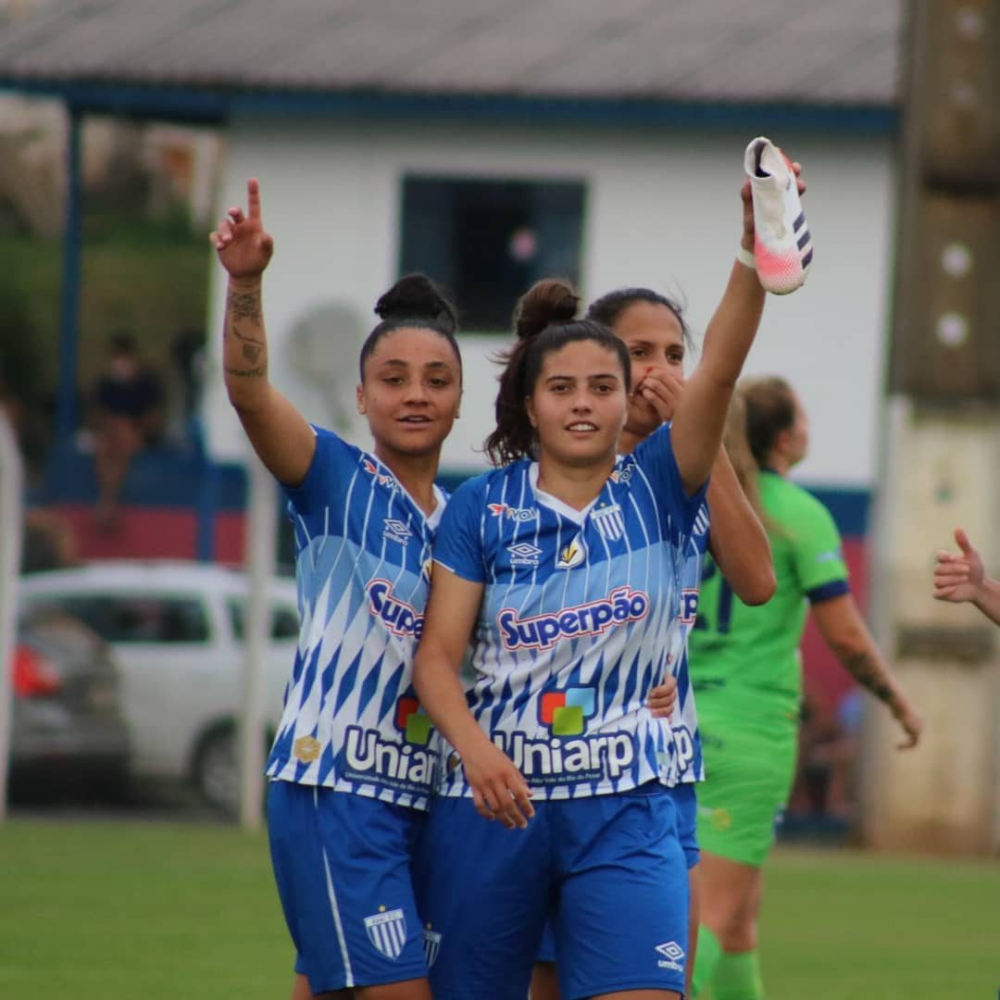

68 jogos · 19 gols
Conquistas
Galeria
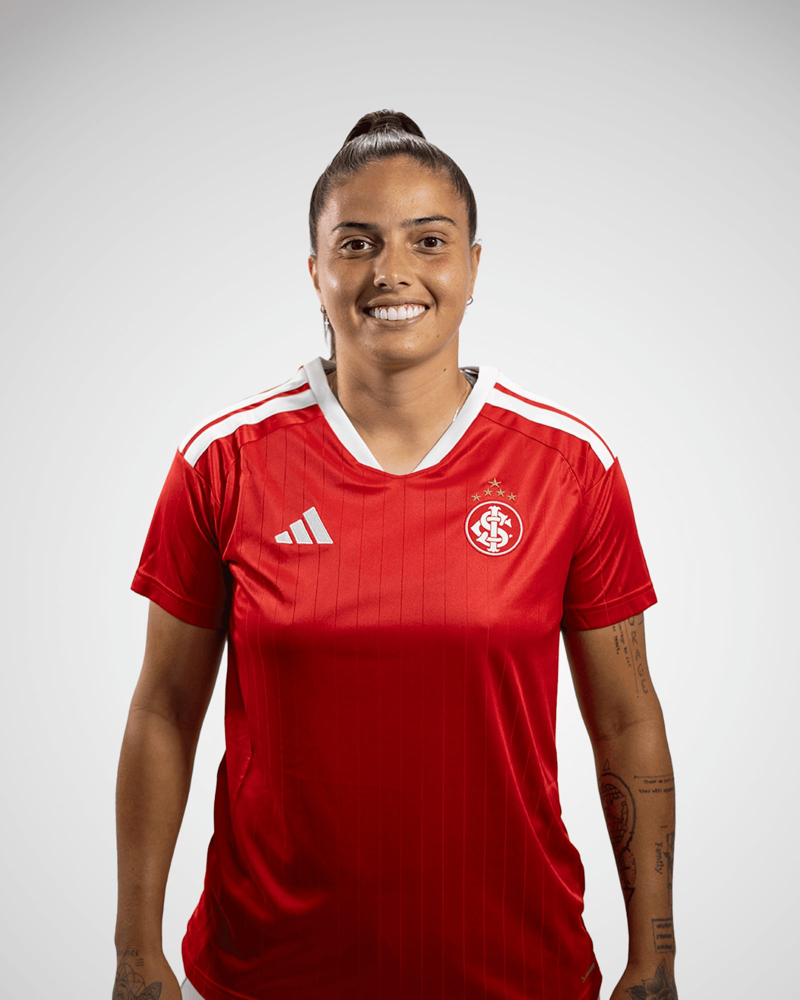
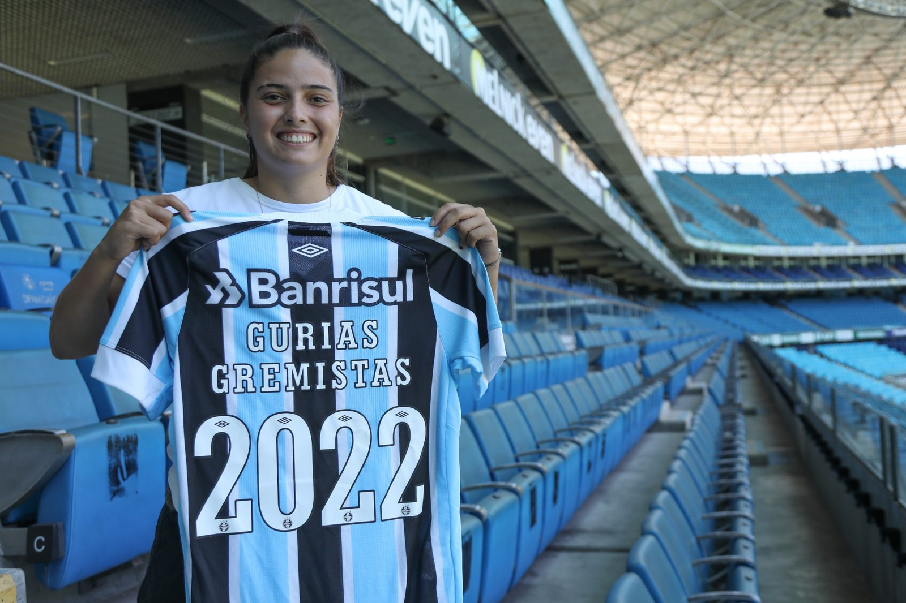
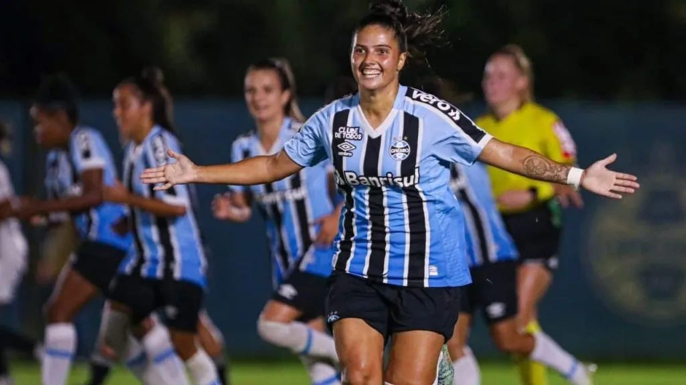
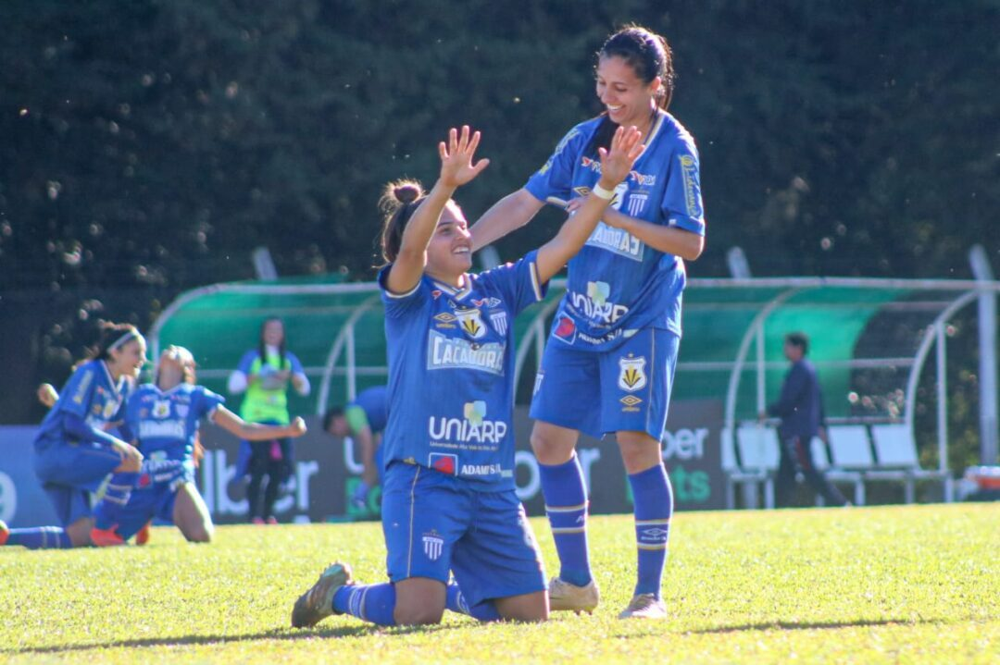
Currículo esportivo
| Temporada | Clube | País | Jogos | Gols | Assistências |
|---|---|---|---|---|---|
| 2026 | 21 | 0 | 0 | ||
| 2025 | 16 | 1 | 1 | ||
| 2024 | Grêmio | 15 | 2 | 0 | |
| 2023 | Grêmio | 20 | 3 | 1 | |
| 2022 | Grêmio | 20 | 2 | 3 | |
| 2021 | 20 | 2 | 2 | ||
| 2020 | 23 | 9 | 3 | ||
| 2019 | 25 | 8 | 0 | ||
| 2019 | 21 | 9 | 0 | ||
| 2019 | 1 | 0 | 0 | ||
| 2017 | 17 | 4 | 0 |
Jogos, gols e assistências conforme a base estatística Ogol. O clube atual segue o anúncio oficial do clube.
Na mídia
Contato profissional
Assuntos profissionais, comerciais e de carreira: fale pelo perfil oficial da atleta.
Mídia kit
International profile